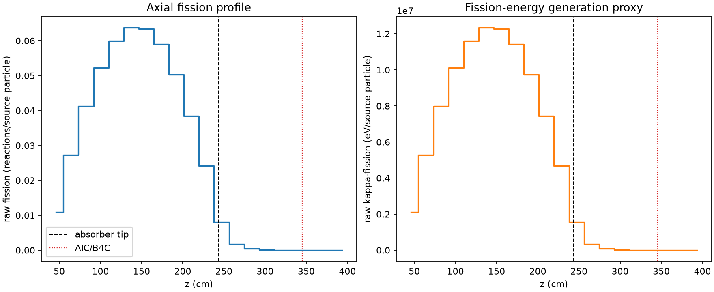
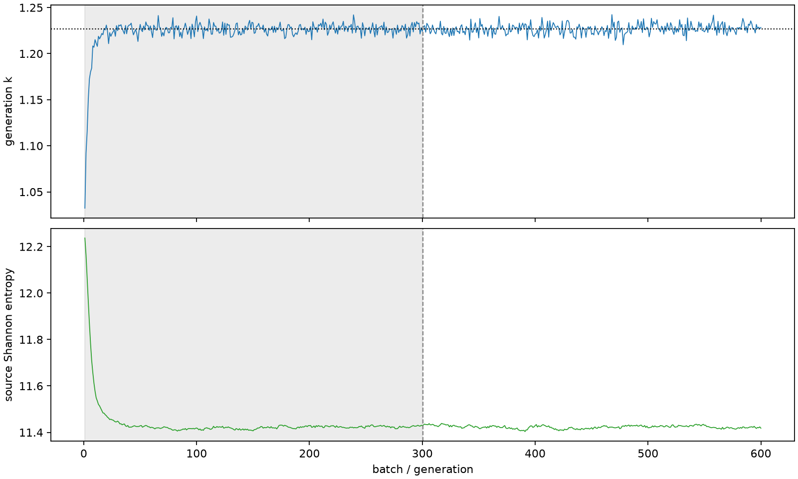

| field | value |
|---|---|
| experiment | V2-STAGE_128_OGRENCI_01-0015 |
| k | 1.2268164364036231 |
| MC standard error | 0.0002040002500007982 |
| seconds | 971.5827783200075 |
| acceptance | not_assessed |
| convergence | review_required |
Completed is output integrity only; physical and statistical review required. Zero tallies do not prove zero production or zero uncertainty.
| diagnostic | value |
|---|---|
| geometric fuel voxels | 5280 |
| zero fission tally voxels | 201 |
| low signal fuel voxels | 1327 |
| low signal fission share | 7.839384590806636e-05 |
| low signal kappa share | 7.842138773314226e-05 |
| important fission share | 0.9500366120508599 |
| previous filter included | 3953 |
| duration estimate s | 1562.5173488400023 |
| actual minus estimate s | -590.9345705199948 |
| fission relative MC error | statistics |
|---|---|
| all_geometric_fuel | {"voxels": 5280, "positive_mean_voxels": 5079, "zero_mean_voxels": 201, "undefined_relative_error_voxels": 201, "median": 0.011640228273817646, "p95": 0.8893514058079065, "maximum": 1.0000000000000002} |
| low_signal | {"voxels": 1327, "positive_mean_voxels": 1126, "zero_mean_voxels": 201, "undefined_relative_error_voxels": 201, "median": 0.613116148543226, "p95": 1.0, "maximum": 1.0000000000000002} |
| important_95pct | {"voxels": 2597, "positive_mean_voxels": 2597, "zero_mean_voxels": 0, "undefined_relative_error_voxels": 0, "median": 0.007756082772607877, "p95": 0.011227863449097764, "maximum": 0.013239455766361277} |
| outside_previous_filter | {"voxels": 1327, "positive_mean_voxels": 1126, "zero_mean_voxels": 201, "undefined_relative_error_voxels": 201, "median": 0.613116148543226, "p95": 1.0, "maximum": 1.0000000000000002} |
| kappa_fission relative MC error | statistics |
|---|---|
| all_geometric_fuel | {"voxels": 5280, "positive_mean_voxels": 5079, "zero_mean_voxels": 201, "undefined_relative_error_voxels": 201, "median": 0.011626872030713324, "p95": 0.8884747433796467, "maximum": 1.0000000000000002} |
| low_signal | {"voxels": 1327, "positive_mean_voxels": 1126, "zero_mean_voxels": 201, "undefined_relative_error_voxels": 201, "median": 0.6131183967498647, "p95": 1.0, "maximum": 1.0000000000000002} |
| important_95pct | {"voxels": 2597, "positive_mean_voxels": 2597, "zero_mean_voxels": 0, "undefined_relative_error_voxels": 0, "median": 0.007747470174693333, "p95": 0.011216257912706739, "maximum": 0.013224569062568766} |
| outside_previous_filter | {"voxels": 1327, "positive_mean_voxels": 1126, "zero_mean_voxels": 201, "undefined_relative_error_voxels": 201, "median": 0.6131183967498647, "p95": 1.0, "maximum": 1.0000000000000002} |
| axial bin | fission share | kappa-fission share |
|---|---|---|
| 1 | 0.021876018686292024 | 0.021876924530839798 |
| 2 | 0.054452706669073085 | 0.05445255578791723 |
| 3 | 0.08227822871205304 | 0.08227788616893135 |
| 4 | 0.10442526211828304 | 0.10442477350318995 |
| 5 | 0.11969444982841489 | 0.11969380631245578 |
| 6 | 0.12716805257308614 | 0.12716750031567428 |
| 7 | 0.12648852553854203 | 0.12648790926174763 |
| 8 | 0.11775181464198121 | 0.11775092687872482 |
| 9 | 0.10032926047041955 | 0.10032879097784714 |
| 10 | 0.07666372341400829 | 0.07666332987880206 |
| 11 | 0.04821888887993281 | 0.04821868357080007 |
| 12 | 0.016075153296278254 | 0.016077538604486265 |
| 13 | 0.0034406789941260497 | 0.0034417586404341008 |
| 14 | 0.0008527121294192247 | 0.0008529920355834757 |
| 15 | 0.0002117494973654528 | 0.00021182299181907546 |
| 16 | 5.507296095151176e-05 | 5.509152729098676e-05 |
| 17 | 1.3135599978996648e-05 | 1.3140766994109863e-05 |
| 18 | 3.4151691939480296e-06 | 3.416555641559767e-06 |
| 19 | 9.739534465580092e-07 | 9.746172796744827e-07 |
| 20 | 1.7686715397987671e-07 | 1.7707354061851165e-07 |
Histories include the inactive-to-active transition at batch 300. kappa-fission approximates fission energy production, not total heat deposition.

